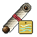
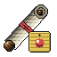
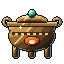

Works of the Post

Arts
14 points to spend
✓
Seals
2 can be inscribed now

Favours
County Tribute

Furnace
lit · 4 / 20
Steles
Delving Lv 1
all can be raised
all can be raised
Flags
1 of 2 planted
Reed Shallows
Reed Shallows
Mirror
Elder Hu's
Echoes in Bronze
Echoes in Bronze
Seal Scriptspaid from the Storehouse · drawn as far as each craft level reaches
Inscribe
Inscribe
Inscribe
Inscribe
Inscribe
What your works add
for Tester, at every post
Tool power +0.3 · Stele Lv 1
Finesse +3 · Seal Lv 1
Nothing yet
Craft Diligence +0.49%
from the Art Dreaming Artisan
from the Art Dreaming Artisan
Craft Diligence +1.0% · plain flag Lv 0
Nothing yet · Seal of the Deep Pouch
In the Storehouse
Copper 58 · Willow Moss 43 · Spirit Wood 4 · Cinnabar Salt 4 · Jade Frog 1
Steles take silver and ore; seals take Storehouse goods.